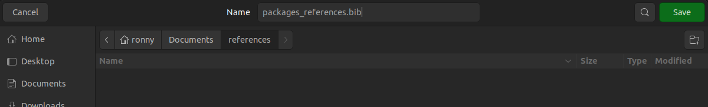
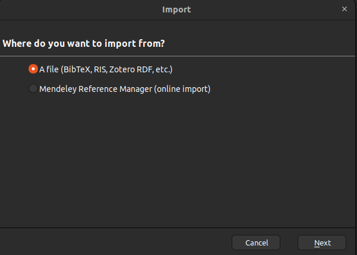
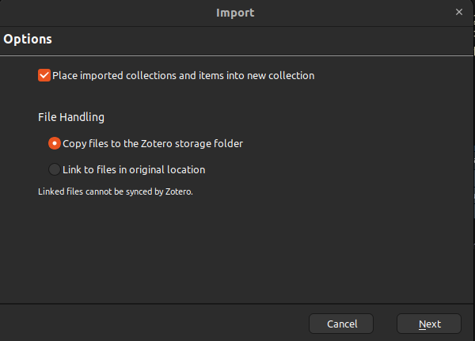

To cite package 'dplyr' in publications use:
Wickham H, François R, Henry L, Müller K (2022). _dplyr: A Grammar of
Data Manipulation_. R package version 1.0.9,
<https://CRAN.R-project.org/package=dplyr>.
A BibTeX entry for LaTeX users is
@Manual{,
title = {dplyr: A Grammar of Data Manipulation},
author = {Hadley Wickham and Romain François and Lionel Henry and Kirill Müller},
year = {2022},
note = {R package version 1.0.9},
url = {https://CRAN.R-project.org/package=dplyr},
}Why?
When working on your research project, probably you will need to cite the R packages used in your data analysis. Also, probably you use Zotero as your reference manager, so, how can you manage the R packages references in Zotero?
Well, here I will show you one manual way to do it.
Obtain the package citation
This one is easy. You just use the function `citation(“dplyr”) and in your console will appear all the bibliographic info from that package.
Now, you need to pay attention on the section that says: A BibTeX entry for LaTeX users is
Creating the BibTex file
From where the @ starts, that’s what you need. So, copy (be aware of selecting the last } line) and paste it in a text file. This can be your Text Editor in ubuntu, Notepad, notes or even a Text File in your RStudio.
You can copy and paste as many references you need. It can look something like this:
@Article{,
title = {{weathercan}: {D}ownload and format weather data from Environment and Climate Change Canada},
author = {Stefanie E LaZerte and Sam Albers},
journal = {The Journal of Open Source Software},
volume = {3},
number = {22},
pages = {571},
year = {2018},
url = {https://joss.theoj.org/papers/10.21105/joss.00571},
}
@Manual{,
title = {R: A Language and Environment for Statistical Computing},
author = {{R Core Team}},
organization = {R Foundation for Statistical Computing},
address = {Vienna, Austria},
year = {2021},
url = {https://www.R-project.org/},
}
@Manual{,
title = {dplyr: A Grammar of Data Manipulation},
author = {Hadley Wickham and Romain François and Lionel Henry and Kirill Müller},
year = {2022},
note = {R package version 1.0.9},
url = {https://CRAN.R-project.org/package=dplyr},
}Save it with the extention .bib:

Importing the file in Zotero
Open Zotero and look for the option import. It will open a window.

Select the option (BibTex, RIS, Zotero RDF, etc.) and from there, look the file in the path you saved. Open the file and a new window will pop up. The options to select there are up to you:

Finally, you will see that you have the references imported to Zotero!
Reuse
Citation
BibTeX citation:
@online{a. hernandez mora2022,
author = {A. Hernandez Mora, Ronny and Calderon Morales, Erick},
title = {Packages Citation and Zotero},
date = {2022-09-14},
url = {https://ronnyale.com//posts/2022-09-14-package-citation-zotero/packages_citation_zotero.html},
langid = {en}
}
For attribution, please cite this work as:
A. Hernandez Mora, Ronny, and Erick Calderon Morales. 2022.
“Packages Citation and Zotero.” September 14, 2022. https://ronnyale.com//posts/2022-09-14-package-citation-zotero/packages_citation_zotero.html.